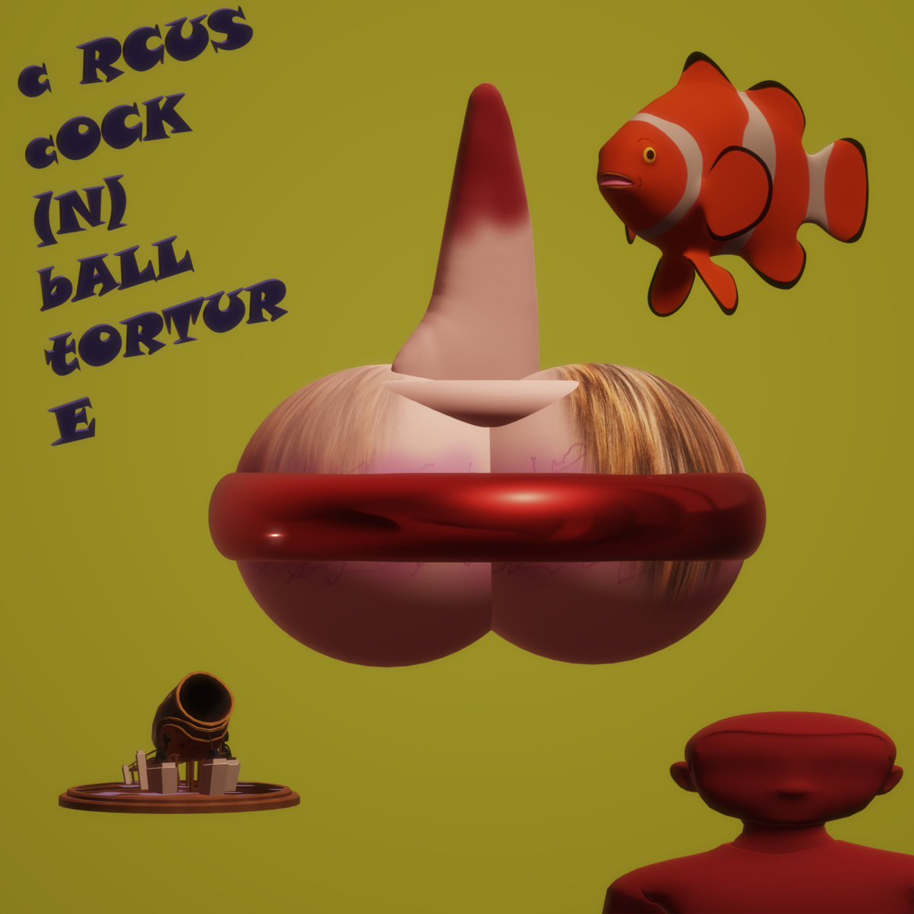
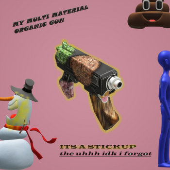
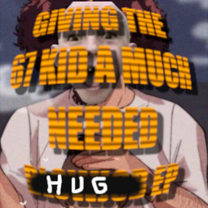
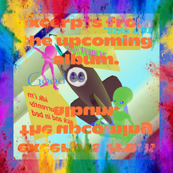
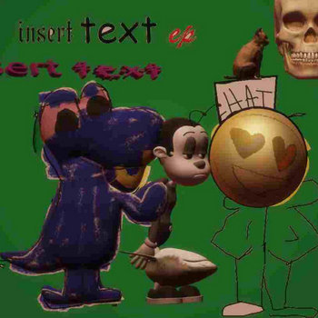
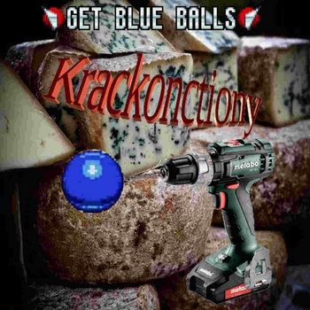
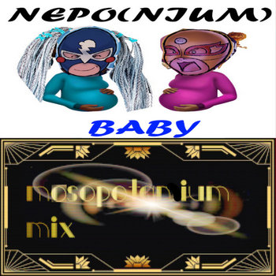
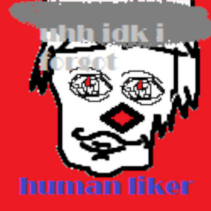

CCBT (released February 22 2026)
Emmy Eighties solo single.
Tracklist:
1. CCBT (1:23)
2. The Famous Brooklyn Jazz Band (0:53)

It's A Stick-Up! (released February 22 2026)
Ral Cobbstone solo single (with contributions by Emmy Eighties and Lizardfuck Fuck).
Remix by DJ Dynämmite.
Tracklist:
1. It's A Stick-Up! (1:54)
2. Neponium Babies (Tyëto Krillys Remix) (1:54)

Giving The 67 Kid A Much Needed (hug) EP (released February 22 2026)
Lizardfuck Fuck solo EP.
Tracklist:
1. My Balls Electric, Or How To Shock Your Balls In Order To Shoot Lazer Jizz Busts (1:39)
2. Can I Brew This Eeffoc Using An E-Girl's Vaginal Discharge Or Do I Need To Grind The Beans A Little Coarser (1:03)
3. Monitoring A Lucky Star Fan's Boner Activity Upon Seeing Konata Izumi Futa Gock Fan Art Is A Good Enough Way Of Determining Whether They Are A Pedophile (1:04)
4. Does Scraping The Dead Skin From Your Bush Make Me Your Little Pogchamp (0:41)
5. Furiously Masturbating To Old-Fashioned Looney Tunes Cartoons Is Widly Inappropriate (1:02)
6. Nonchalant Bestial Whipping Is One Way Of Normalizing Zoophilia For The Greater Public (1:36)
7. Digging Into Your Bro's Asshole Is Like A Box Of Chocolates, You Never Know What You're Gonna Get (1:10)
8. How To Masturbate A Mosquito So That Mosquito Cum Gives You Superpowers (1:08)
9. Among Us Potion Made Me Crash Into A Family Of Four, None Of Them Are Dead Unfortunately (1:06)
10. Bridge (1:17)

Excerpts From The Upcoming Album (released June 11 2025)
Excerpts from the (now cancelled) album "IDK I'M CURRENTLY SICK AND IN BED".
Ral C. and Lizardfuck F.
Additional contributions by Plague P.
Tracklist:
1. ~~my life will lose control~~ (1:41)
2. the process of idking (0:56)
3. racism (ft. Toade from the Hit game supre mairo bross) (1:31)
4. Averightmlarmsoink (2:45)

Insert Text EP (released December 18 2024)
EP by Ral C. and Lizardfuck F.
Features exclusive bonus track only available by downloading the album on Bandcamp.
Tracklist:
1. cojumpendium theme song (HD!) (1:13)
2. this song could kill a victorian yoshi (0:43)
3. human liker (1:26)
4. victorian yoshi is kil (1:13)
5. nepo(nium) baby (1:40)
6. the following song you're about to listen to samples twist made by korn in 1996 i think (1:55)
7. The Uhhh Idk I Forgot Is Not Your Average Band (BONUS TRACK !!!!1!!!!) (1:09)

Krackonctiony (released December 18 2024)
Single by Lizardfuck F.
Insert Text EP b-side.
Tracklist:
1. Krackonctiony (1:47)

nepo(nium) baby (mosopotanium mix) (released December 18 2024)
Single by Ral C.
Insert Text EP b-side.
Tracklist:
1. nepo(nium) baby (mosopotanium mix) (1:41)

human liker (single version) (released December 18 2024)
Single by Ral C.
Insert Text EP b-side.
Tracklist:
1. human liker (single version) (0:33)